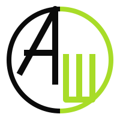
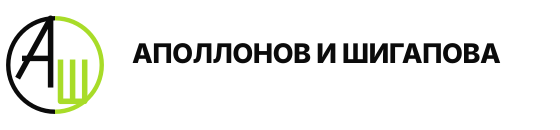
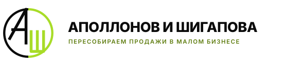

Название
Аполлонов и Шигапова
Две фамилии. Не агентство и не студия — партнёрская практика, где у работы есть авторы.
Знак — монограмма АШ в круге: две фамилии в одной замкнутой системе. Ниже — утверждённый вариант 19, цветовые решения, палитра, шрифты и правила, по которым логотип живёт везде: от аватарки до договора.
Эти четыре строки — основа всего: сайта, рекламы, договоров, соцсетей. Меняются только по общему решению, не по ходу дела.
Две фамилии. Не агентство и не студия — партнёрская практика, где у работы есть авторы.
Идёт рядом с логотипом и в шапке сайта. Слово «пересобираем» — ключевое: приходим туда, где уже что-то есть, и чиним систему.
Указываем в подписи и в контактах. Работаем удалённо, но с понятной точкой на карте.
Круг, разделённый вертикалью: слева белая А, справа зелёная Ш. Перерисован в вектор, толщины выровнены.
Знак работает без подписи: круг с монограммой узнаётся в аватарке 40×40 и на баннере.
А и Ш делят круг пополам вертикалью. Это два партнёра с разными зонами: сайт и тексты — Алина, трафик и цифры — Саша. Круг общий.
Круг — это воронка, которая не рвётся: трафик, сайт, заявка, разбор, продажа, ведение. Мы продаём именно замкнутость, а не отдельные услуги.
Зелёным всегда закрашена правая половина — Ш и её дуга. Белое — то, что уже есть у клиента. Зелёное — то, что растёт.
Поле 200×200 · окружность r=85 · кольцо 8 · буквы 10
А: вершина в верхней точке круга, перекладина на y=88
Ш: три штриха, база y=166, правый штрих сливается с дугой
Композиция варианта 19 сохранена полностью. Приведено в порядок то, что в растровой картинке было неровным:
Правило простое: сначала пробуем основной, если фон мешает — берём моно. Придумывать новые сочетания нельзя.

Полный локап — там, где нас видят впервые. Короткий — там, где нас уже знают. Знак отдельно — в аватарках и фавиконе.



Зелёный — только акцент: кнопка, цифра, одно слово. Как только зелёного становится много, он перестаёт работать.
Inter — на сайте и в презентациях. В документах и на чужих компьютерах — системный Arial: подмена не ломает вёрстку.
Три правила, которые держат знак в форме там, где им пользуются быстро и без дизайнера.
Свободное поле вокруг знака — не меньше четверти его диаметра. В это поле не заходят текст, кнопки, края макета и другие логотипы.
Знак — от 24 px на экране и от 8 мм в печати. Локап с дескриптором — от 180 px и от 45 мм, иначе строку под названием не прочитать: берём короткий вариант.
Три места, где логотип нужен уже на этой неделе: сайт, соцсети и документы.

Все файлы — SVG: не теряют качество, весят килобайты, открываются в браузере, Figma и Canva.
| Файл | Что это | Где применять |
|---|---|---|
| ash-mark-primary.svg | Знак, основной | Тёмный фон — везде по умолчанию |
| ash-mark-inverse.svg | Знак, инверсный | Светлый фон, печать |
| ash-mark-green.svg | Знак, моно-зелёный | Акцентные носители |
| ash-mark-white.svg | Знак, моно-белый | Фото и цветные подложки |
| ash-mark-black.svg | Знак, моно-чёрный | Зелёная плашка, штамп, гравировка |
| ash-mark-grey.svg | Знак, градации серого | Ч/б печать документов |
| ash-logo-primary.svg | Локап с дескриптором | Шапка сайта, презентация, бланк |
| ash-logo-inverse.svg | Локап с дескриптором, светлый фон | Документы, КП, счета |
| ash-logo-short-primary.svg | Короткий локап | Подвал, подпись в письме |
| ash-logo-short-inverse.svg | Короткий локап, светлый фон | Счета, приложения к договору |
| ash-logo-white.svg | Локап, моно-белый | Фото-подложки, видео |
| ash-logo-black.svg | Локап, моно-чёрный | Ч/б печать |
| ash-logo-green.svg | Локап, моно-зелёный | Тёмные акцентные макеты |
| ash-logo-vertical-primary.svg | Вертикальный локап | Квадратные форматы, сторис |
| ash-logo-vertical-inverse.svg | Вертикальный локап, светлый фон | Печать, обложки |
| ash-badge-dark.svg | Плашка тёмная | Аватар соцсетей |
| ash-badge-green.svg | Плашка зелёная | Аватар, когда нужен акцент в ленте |
| ash-badge-light.svg | Плашка светлая | Каталоги и площадки со светлым интерфейсом |
| ash-badge-circle.svg | Плашка круглая | Telegram, WhatsApp, Авито |
| ash-favicon.svg | Фавикон | Вкладка браузера, закладки |
Порядок именно такой: сначала домен, потом почта на этом домене, потом соцсети под тем же именем.
{kind=link}
{kind=link}
{kind=link}
{kind=link}
{kind=link}
{kind=link}
{kind=link}
{kind=link}
{kind=link}
{kind=link}
{kind=link}
{kind=link}
{kind=link}
{kind=link}
{kind=link}
{kind=link}
{kind=link}
{kind=link}
{kind=link}
{kind=link}